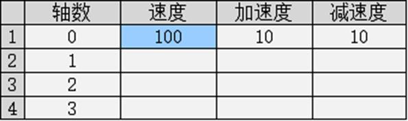
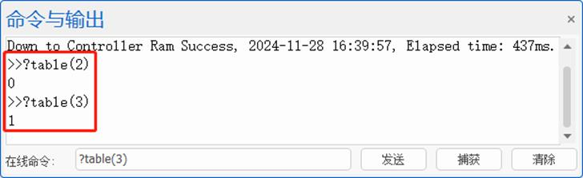

|
类型 |
报表视图元件操作指令 |
|
描述 |
获取指定报表元件当前选中行列编号，将其保存到table表中。 |
|
语法 |
HMI_TABLECURSOR (winid, controlid, num[, num2]) winid：HMI文件里面窗口编号 controlid：元件编号 num：当前选中行号、列号分别存储在table(num), table(num+1) 行= -1表示选中所有行，列 = -1表示选中所有列。 行列同时 = - 1表示未选中。 num2：当前选中光标的位置范围 table(num2),table(num2+1)为光标左上角位置(x,y)。 光标位置相对于元件位置，滚动条偏移有效。 table(num2+2),table(num2+2)为光标显示宽高。 当行列选中光标=-1时，对应的光标宽高也是-1。
注：行号、列号从0开始编码（表头行/列不计入行/列号）！ |
|
适用控制器 |
支持RTHmi |
|
例子 |
HMI_TABLECURSOR (16,1,2) ’获取16号窗口第1个元件当前选中的行列编号，将其分别保存到table(2)和table(3)中 运行效果如下： Ø 选中单元格后，在“在线命令”中输入“?table(2)”以及“?table(3)”，“命令与输出栏”打印当前选中单元格的行列号   |